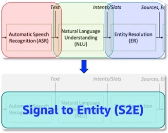
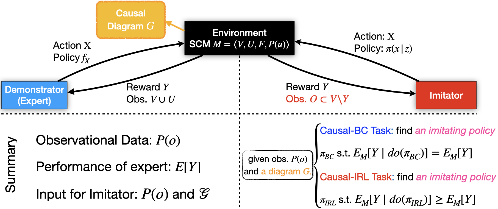
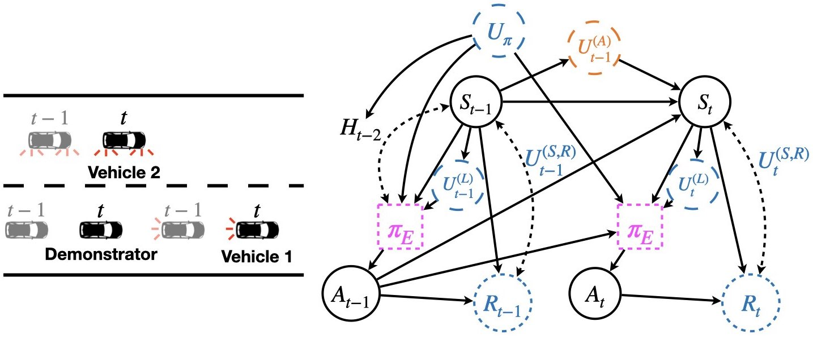
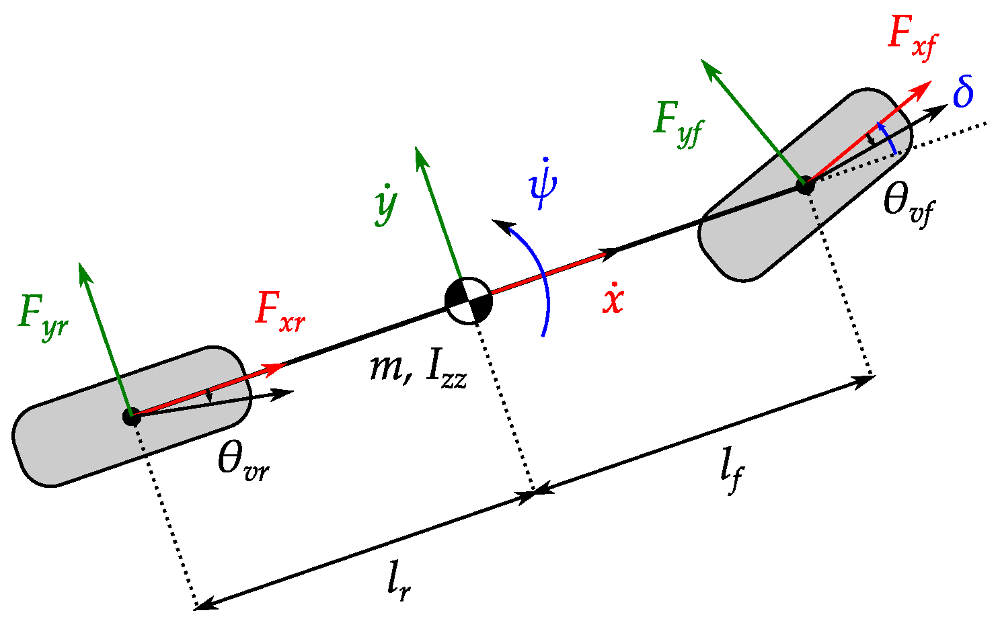
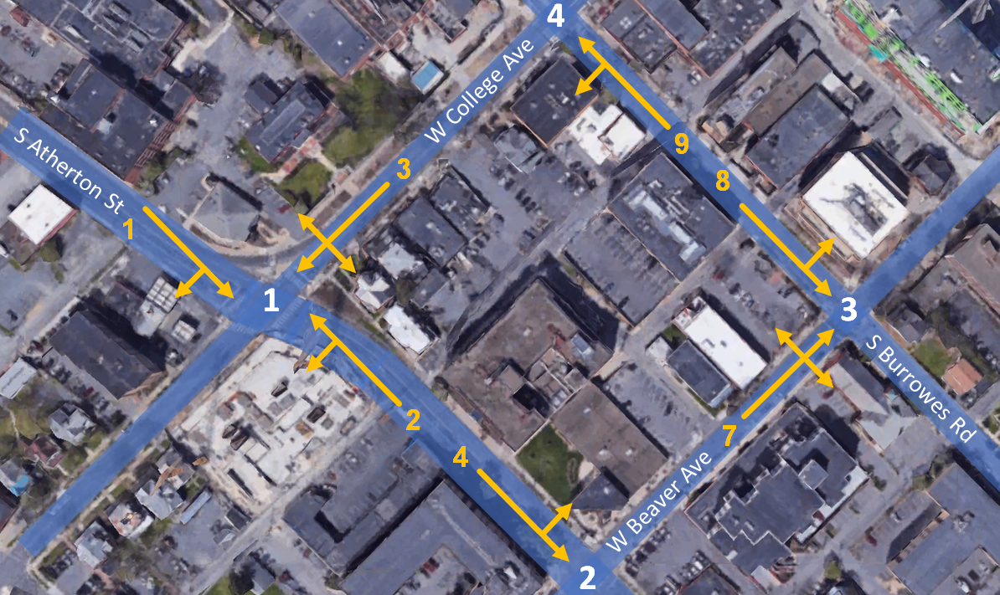

|
Kangrui Ruan (Darren)
I am currently a final-year Ph.D. student at Columbia University advised by Prof. Xuan Di
(Ditect Lab). Before joining CU, I obtained my Master's degree from Carnegie Mellon University (CMU) in 2020.
My research focuses on Causal Inference, Machine Learning, Deep Learning and their applications to learning human behaviors. I also worked on other topics like Large Language Models (LLMs), probabilistic graphical models (PGMs), and Graph Neural Networks (GNNs).
Representative papers are highlighted.
Email /
CV (last updated: July 2023) /
LinkedIn /
Google Scholar /
|
|
Selected Publications
|

|
S2E: Towards an End-to-End Entity Resolution Solution from Acoustic Signal
Kangrui Ruan, and
Xin He, and
Jiyang Wang, and
Xiaozhou (Joey) Zhou, and
Helian Feng, and
Ali Kebarighotbi
2024 IEEE International Conference on Acoustics, Speech and Signal Processing, ICASSP 2024
[paper]
Traditional cascading Entity Resolution (ER) pipeline suffers from propagated errors from upstream tasks.
We address this issue by formulating a new end-to-end (E2E) ER problem, Signal-to-Entity (S2E), resolving query entity mentions to actionable entities in textual catalogs directly from audio queries instead of audio transcriptions in raw or parsed format.
|
|

|
Causal Imitation Learning via Inverse Reinforcement Learning
Kangrui Ruan*, and
Junzhe Zhang*, and
Xuan Di, and
Elias Bareinboim
The Eleventh International Conference on Learning Representations, ICLR 2023
[paper]
This paper has 2 key contributions.
First, the paper analyzes structural conditions on the causal model under which learning the expert policy is possible in the presence of unobserved confounding.
Second, the authors further exploit knowledge of the graphical structure to extend IRL algorithms such as GAIL or MWAL to the confounded settings.
|
|

|
Learning Human Driving Behaviors with Sequential Causal Imitation Learning
Kangrui Ruan, and
Xuan Di
The 36th AAAI Conference on Artificial Intelligence, AAAI 2022
[paper]
[code]
We develop a sequential causal template that generalizes the default MDP settings to one with Unobserved Confounders (MDPUC-HD).
|
|

|
Autonomous navigation at unsignalized intersections: A coupled reinforcement learning and model predictive control approach
Rolando Bautista-Montesano,
Renato Galluzzi,
Kangrui Ruan,
Yongjie Fu, and
Xuan Di
Transportation Research Part C: Emerging Technologies, 2022
[paper]
This paper develops an integrated safety-enhanced reinforcement learning (RL)
and model predictive control (MPC) framework for autonomous vehicles (AVs) to navigate unsignalized intersections.
|
|

|
CVLight: Decentralized Learning for Adaptive Traffic Signal Control with Connected Vehicles
Zhaobin Mo, Wangzhi Li, Yongjie Fu, Kangrui Ruan, and
Xuan Di
Transportation Research Part C: Emerging Technologies, 2022.
[paper]
This paper develops a decentralized reinforcement learning (RL) scheme for multi-intersection adaptive traffic signal control (TSC),
called “CVLight”, that leverages data collected from connected vehicles (CVs).
|
Service
Conference Reviewer: NeurIPS, ECML-PKDD, AAAI, ICRA
Journal Reviewer: Transportation Research Part B, Part C, Transportation Science
Lead Teaching Assistant: CIEE E3111/4111: Uncertainty and Risk in Civil Infrastructure Systems (2023 Fall)
Lead Teaching Assistant and Co-instructor: CIEN E4011 Big Data Analytics in Transportation (2024 Spring)
|
{kind=link}